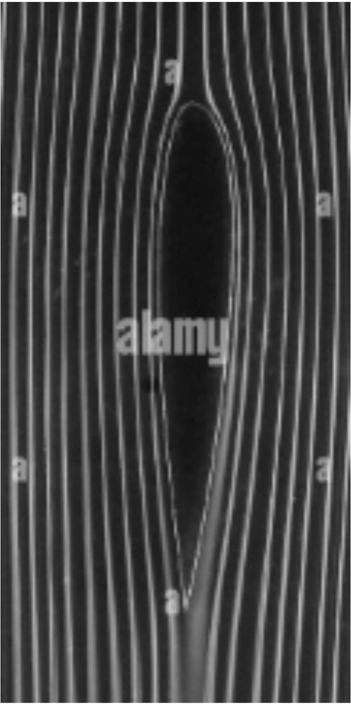
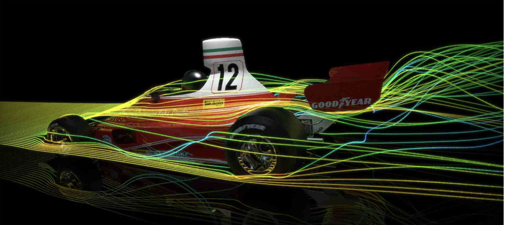
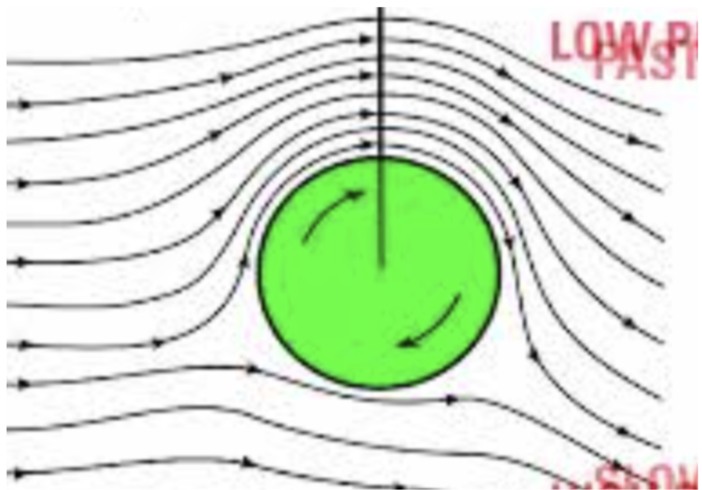

Physics • Mechanics
The science behind spin
Seeing objects spin is nothing new. For those of you who play racket sports such as tennis or table tennis, spin is embedded in your muscle memory: the art of displacing your opponent to deliver that final killer shot. Or how about on a particularly uneventful day when you take a marble and spin it on a counter top and come back 5 minutes later to discover it is still spinning. Then we can zoom out and realise our planet, along with ourselves, is spinning at 1000 miles per hour. So what is the physics behind how something the spin of something as small as a marble and a ball is governed by the same force that is capable of providing lift for an aircraft?
Most of the science behind aerodynamic spin is explained by the Magnus effect, named after the German physicist Heinrich Magnus, though it was first noticed by Isaac Newton in 1672 when watching a tennis match at Cambridge however Magnus studied and quantified how spin affects the motion of projectiles, another word for objects that are in the air. When an object is at rest, the air around the object looks a bit like this:

As you can see air just curves around the object, a little bit like a mould. Something important to note is that the air is roughly evenly spaced around the object when at rest, this means that there is very little pressure imbalance around the object. See how this changes in the next image.

Here we see an F1 car moving through the air, you can see at the front you get very high pressure, this is because the car is pushing in the air and squeezing the particles together. Imagine it like squeezing a spring and the coils getting pushed together. It is a little bit more complicated at the back, this is where a low pressure area forms also known as the wake of a car in F1 terms, the car pushes all the air out of the way and there is no air left to fill the space at the back leading to low pressure. But since air pressure sucks things in, it sucks the car into the wake leading to what is known as drag which slows down the car, something F1 teams hate. But notice how there is still no spin created.

Well look at the final image, you can see as the object spins, it drags air around with it, this is due to the viscosity of air, which is a measure of how ‘sticky’ the air is and how well it clings on to the surface of the projectile. The ball is spinning clockwise, this initial turning moment is created by some initial force placed upon it, in this case it could be a table tennis racket moving upwards as the ball leaves the racket causing the clockwise spin. However what happens afterwards is purely from the Magnus effect, as mentioned before the viscosity of the air causes it to move in the same direction of the ball, in this case clockwise. This causes a build up of air on top of the ball and causes a pressure imbalance at the bottom of the ball as a lot of the air from the bottom has been sucked to the top. Now that the pressure is higher at the top and lower at the bottom, there is a net force downwards as the air at the top tries to reach the bottom to even out the pressure, this is what causes the ball to dip so sharply when top spin is applied.
The effect can also be explained through Newton’s 3rd law instead of air pressure imbalance. Newton’s third law can be reduced down into the statement: ‘every action has an equal and opposite reaction’. In the context of the ball with top spin, as the ball rotates and pushes the air up, the air pushes the ball down. You can also explain the Magnus effect through Bernoulli’s principle, which in short explains how air pressure affects the acceleration of an object, however this explanation is more conceptually challenging. As the ball moves forward with top spin, you can think of the air at the bottom of the ball being accelerated by the spin. According to the principle the larger the acceleration of air, the lower the pressure, this is a relationship known as inverse proportionality, as one thing increases the other decreases by the same factor. At the top of the ball, air is not being accelerated by a force as large as the force at the bottom. This is because the spin of the ball is pushing the air forwards, opposite to the direction it wants to go as air always wants to oppose the direction of motion. In this case it wants to go backwards, so even though it is being accelerated there is some resistance leading to a smaller acceleration. A smaller acceleration leads to a larger air pressure which creates a pressure imbalance as we have seen before.
Now we have seen the science behind spin, what are the practical implications of the Magnus effects. Firstly, and most obvious, is the use in sports. Top spin can make a ball curve downwards unexpectedly, forcing the opponent to move towards the forecourt, not an ideal position in tennis. Backspin is the opposite of topspin and helps a ball stay in the air for longer, it is common for long shots in golf and it is also used to stop a ball quickly when it reaches the ground instead of continuing to roll. Now let’s move onto the integration of the Magnus effect from an engineering point of view, the E Ship-1 uses the Magnus effect to provide propulsion, it uses 30% less fuel compared to a typical diesel ship engine. However there is a reason why the majority of marine vehicles rely on traditional diesel engines instead of the Flettner Rotors on the E-Ship, this is because they are highly dependent on wind direction and speed, also diesel engines are far more economically efficient in the long term. Finally, and probably most exciting is the use of the Magnus effect in experimental VSOL aircraft (Short-take off and landing aircraft), the Magnus effect can be used to provide extra lift to aircraft when taking off, meaning less runway is needed for aircraft to lift off. When landing, the Magnus effect can be used to make landings softer as well as giving the fuselage extra downforce so less landing strip is needed to slow the plane down.
The Magnus effect shows how spin can create a force that changes the path of a moving object. From topspin in table tennis to Flettner rotors on ships and experimental STOL aircraft, it’s a simple principle with some surprisingly powerful effects. Understanding it helps explain sports, engineering, and even aircraft lift, showing how a basic physical force can have a wide range of real-world applications.